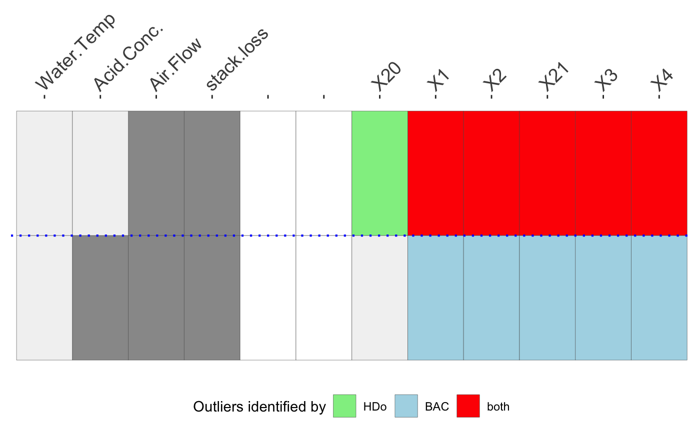
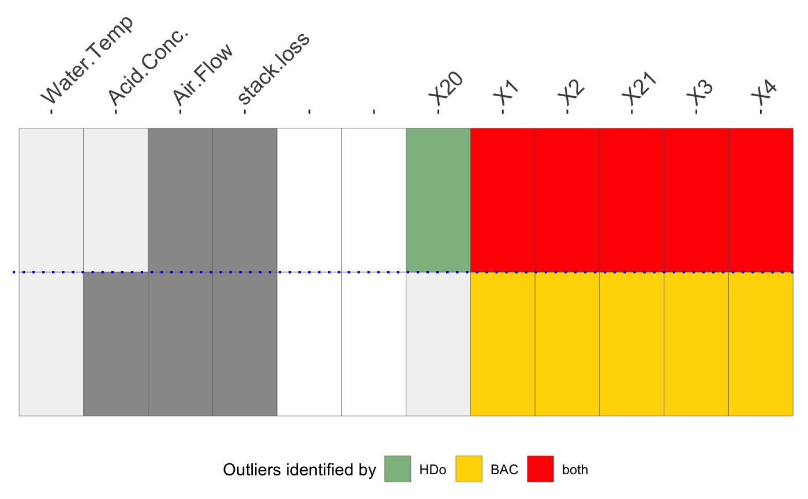

O3plotColours.RdProvides a colour scheme for O3 plots.
O3plotColours(colours = c("khaki", "yellow", "red", "lightgreen", "lightblue", "red", "slategray1", "slategray2", "slategray3", "slategray4", "orange", "red"), colors)
| colours | A set of colours for the three kinds of plot. There are 12 in all and the defaults are khaki, yellow, red, lightgreen, lightblue, red, slategray1, slategray2, slategray3, slategray4, orange, red. The first three (1-3) are for plots with three different tolerance levels; the next three (4-6) are for plots comparing results for two methods; the final six (7-12) are for plots combining results of from three to six methods. If results from m methods are combined in one plot and m is more than two, then red is always used for m methods agreeing and the rest of the colour scale is shifted up accordingly. |
|---|---|
| colors | To allow users to write 'colors' instead of 'colours'. |
O3plotColours is provided for assigning colours for O3plots.
A named list of colours.
c1 <- O3prep(stackloss, k1=2, method=c("HDo", "BAC"), tolHDo=0.025, tolBAC=0.01) c2 <- O3plotM(c1) c2$gO3col1 <- O3plotColours(colours=c("khaki", "yellow", "red", "darkseagreen", "gold1", "red", "slategray1", "slategray2", "slategray3", "slategray4", "orange", "red")) c3 <- O3plotM(c1, O3control=col1) c3$gO3